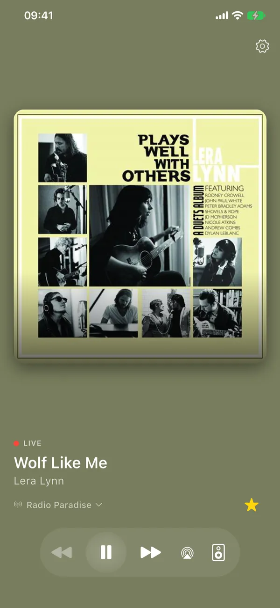

Internetradio voor iPhone, Apple TV en Android
Gewoon radio. Zonder reclame.
Geselecteerde zenders, direct afgespeeld.
Streamert speelt internetradiozenders (MP3/AAC) rechtstreeks af: geen reclame in de app en geen account. Open de app en je hoort meteen je laatste zender.
Voor iPhone en Android, met een aparte app voor Apple TV.

Wat Streamert doet
Luisteren. Verder niets.
Geen podcasts en geen eindeloze catalogus. Een lijst goede zenders en een speler die doet wat hij moet doen.
Ruim 1.800 zenders
Een samengestelde lijst reclamevrije internetradiozenders. Zoek, filter op genre en bewaar je favorieten. Veeg om naar de volgende zender te gaan.
Wat speelt er nu
Titel en artiest van het nummer dat speelt, met albumhoes als die te vinden is. Heb je Apple Music? Dan zoek je het nummer daar met één tik op.
Op de achtergrond
Luister door met je telefoon op slot of terwijl je een andere app gebruikt, en bedien de radio vanaf je vergrendelscherm. Op iPhone stuur je het geluid ook via AirPlay.
Apple TV
Een eigen app voor Apple TV. Op hetzelfde wifi-netwerk blijven iPhone en Apple TV in sync: dezelfde zender, samen starten en stoppen.
Sonos
Speel af op Sonos-speakers in je eigen wifi-netwerk, in één kamer of in meerdere tegelijk. De speaker speelt door, ook als je Streamert sluit.
Geen account, geen tracking door derden
Geen reclame, geen analytics en geen account nodig. Meer hierover in de privacyverklaring.
Binnenkort te horen
Streamert komt naar de App Store (iPhone en Apple TV) en Google Play (Android).
Ook van
Fietsert
De rustige knooppunten-app: rondjes, knooppunten en terrasjes onderweg.